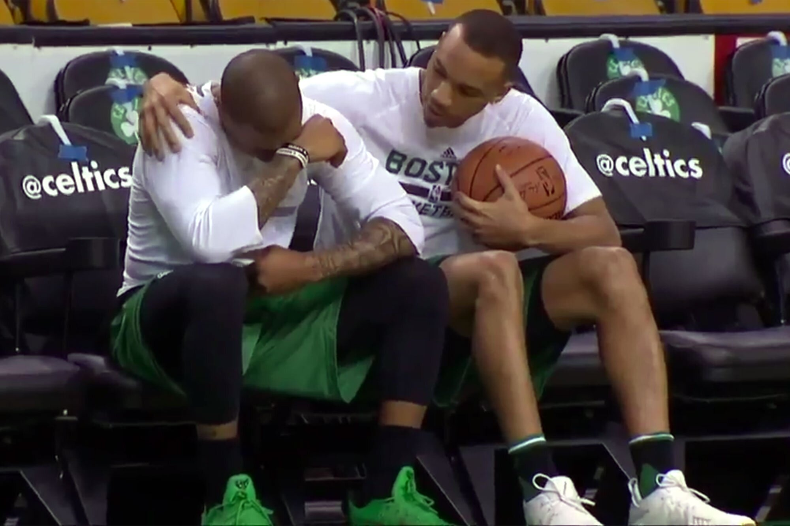
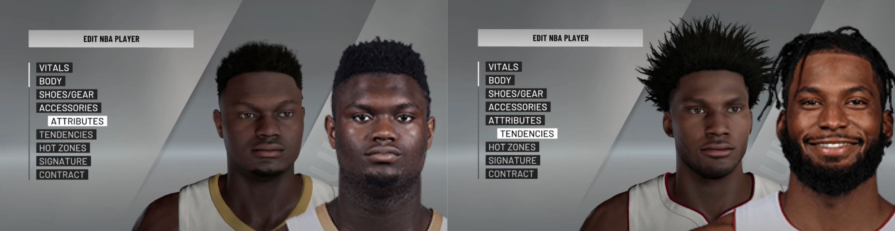
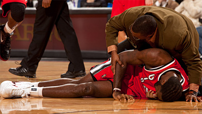

dither.nba pixelates the headshots of NBA players based on their per year statistics, where performance determines the resolution of the image. The statistics are synthesized into a single number through the default yahoo head to head fantasy basketball algorithm.
A brief history of relevance determining visibility in the context of the NBA.

NBA Jam’s 8 bit interface allowed for little to no specificity in players. Although names were assigned to bodies and teams were assigned to colors, the player itself did not exist.
In the 2017 postseason, Celtics guard Isaiah Thomas played through a hip injury that would eventually force him out of the league in 2020. In that 2017 postseason, he led the Celtics to the Eastern Conference Finals, risking his long term career for the franchise he grew to love. He played the first game of the playoffs after finding out his sister died in a car accident. Later that summer, Celtics General Manager Danny Ainge traded him to the Cavaliers after the analysis of his injury deemed him valueless. "I might not ever talk to Danny again. That might not happen. I'll talk to everybody else. But what he did, knowing everything I went through, you don't do that, bro. That's not right.” - Isaiah Thomas
In the most recent edition of NBA 2k there exists the player, but only so far as the player exists in the world.
In 2007, Greg Oden was selected first overall in the NBA draft by the Trail Blazers. Three separate surgeries for an ailing right knee would sideline him for the majority of his early career and in 2012 he was waived by the Blazers. In 2015 he departed to the Chinese Basketball Association and now works as an assistant coach at Ohio State. "You just keep on numbing yourself with alcohol trying not to think about it." - Greg Oden